3 Exploratory
3.2 Initial Data Processing
3.2.1 Import data & merge
cyto <-
read.csv("Output Files/cleaned_cytokine_all.csv")
cytobin <-
read.csv("Output Files/cleaned_cytokine_bin_all.csv")
cyto_red <-
read.csv("Output Files/cleaned_cytokine.csv")
meta <-
read.csv("Output Files/metadata_cyto.csv") %>%
mutate(iav=gsub("neg", "IAV-", iav),
iav=gsub("pos", "IAV+", iav))
# Merge cytokine & meta data
data <-
merge(cyto, meta)
data_red <-
merge(cyto_red, meta)
databin <-
merge(cytobin, meta) 3.2.2 Ensure variables are correct format
data$iav <- as.factor(data$iav)
data$location <- as.factor(data$location)
data$year <- as.factor(data$year)
data$sex <- as.factor(data$sex)
data$molt.stage <- factor(data$molt.stage, levels=c("III", "IV", "V"), ordered=TRUE)
data$bc_bin <- factor(data$bc_bin, levels=c("Poor", "Average", "Robust"))
data$analysis.year <- factor(data$analysis.year)
data$batch <- factor(data$batch, levels=c("1", "2", "3", "4"))3.3 Descriptive Stats
3.3.2 Sample sizes across variables
##
## IAV- IAV+
## 76 40##
## neg pos
## 86 30##
## Great Point Monomoy Muskeget
## 10 63 43##
## 2014 2015 2016 2017 2018 2019 2020 2023
## 5 7 9 25 17 17 10 26##
## F M
## 62 51##
## III IV V
## 7 27 67##
## Poor Average Robust
## 31 52 25##
## 2016 2022 2023
## 18 72 263.3.3 Cytokine detections per sample
num_samples <- apply(cyto[,2:14], 2, function(x) sum(x>0)) %>%
data.frame() %>%
mutate(perc=round((./116)*100, digits=2))
num_samples## . perc
## GM.CSF 3 2.59
## IFNg 76 65.52
## IL.2 51 43.97
## IL.6 34 29.31
## IL.7 76 65.52
## IL.8 13 11.21
## IL.15 18 15.52
## IP.10 3 2.59
## KC.like 49 42.24
## IL.10 29 25.00
## IL.18 116 100.00
## MCP.1 1 0.86
## TNFa 2 1.723.3.4 Cytokine Ranges
cyto_pos <-
data %>%
filter(iav=="IAV+") %>%
select(1:14)
std.error <- function(x) sd(x)/sqrt(length(x))
pos_range <-
meta %>%
select(Sample, iav) %>%
filter(iav=="IAV+") %>%
merge(., cyto, by="Sample") %>%
pivot_longer(!c(iav, Sample), names_to="cytokine", values_to="concentration") %>%
filter(!concentration==0) %>%
group_by(cytokine) %>%
reframe(pos_sampsize=n(),
mean=mean(concentration),
se=std.error(concentration),
median=median(concentration),
min=min(concentration),
max=max(concentration)) %>%
filter(!duplicated(.)) %>%
mutate(across(where(is.numeric), \(x) round(x, 2))) %>%
mutate(pos_meanse=paste(mean, "+", se),
pos_medrange=paste(median, " (", min, " - ", max, ")", sep="")) %>%
select(cytokine, pos_sampsize, pos_meanse, pos_medrange)
neg_range <-
meta %>%
select(Sample, iav) %>%
filter(iav=="IAV-") %>%
merge(., cyto, by="Sample") %>%
pivot_longer(!c(iav, Sample), names_to="cytokine", values_to="concentration") %>%
filter(!concentration==0) %>%
group_by(cytokine) %>%
reframe(neg_sampsize=n(),
mean=mean(concentration),
se=std.error(concentration),
median=median(concentration),
min=min(concentration),
max=max(concentration)) %>%
filter(!duplicated(.)) %>%
mutate(across(where(is.numeric), \(x) round(x, 2))) %>%
mutate(neg_meanse=paste(mean, "+", se),
neg_medrange=paste(median, " (", min, " - ", max, ")", sep="")) %>%
select(cytokine, neg_sampsize, neg_meanse, neg_medrange)
table <- merge(neg_range, pos_range, by="cytokine", all.x=TRUE)
write.csv(table, "Output Files/manuscript_cytokinetable.csv", row.names=FALSE)3.4 PCA
pca <-
prcomp(data_red[,2:10], center=TRUE, scale=TRUE)
pca_df <-
data.frame(
x=pca$x[,1],
y=pca$x[,2],
molt.stage=data$molt.stage,
year=factor(data$year),
location=data$location,
sex=data$sex,
iav=data$iav,
iavser=data$iavser,
bc_bin=data$bc_bin,
analysis.year=data$analysis.year,
batch=data$batch
)
pca_labelx <-
paste("PC1 (",
round(abs(summary(pca)$importance[2,1]*100), digits=0),
"%)",
sep="")
pca_labely <-
paste("PC2 (",
round(abs(summary(pca)$importance[2,2]*100), digits=0),
"%)",
sep="")3.4.1 Molt Stage
ggplot(pca_df,
aes(x=x,
y=y,
col=molt.stage)) +
geom_point() +
labs(x=pca_labelx,
y = pca_labely) +
scale_color_manual("Molt Stage",
values=c("#9d9d9d","#008ba2", "#000000")) +
theme_bw() +
theme(panel.grid=element_blank())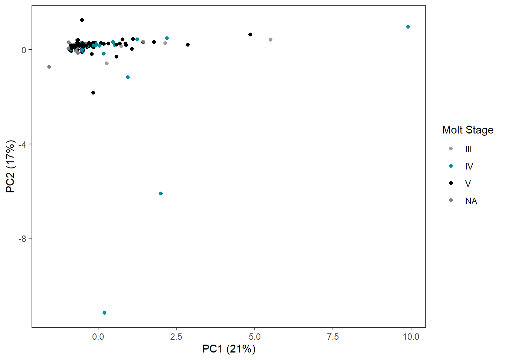
3.4.2 Year
ggplot(pca_df,
aes(x=x,
y=y,
col=year)) +
geom_point() +
stat_ellipse() +
labs(x=pca_labelx,
y = pca_labely) +
theme_bw() +
theme(panel.grid=element_blank())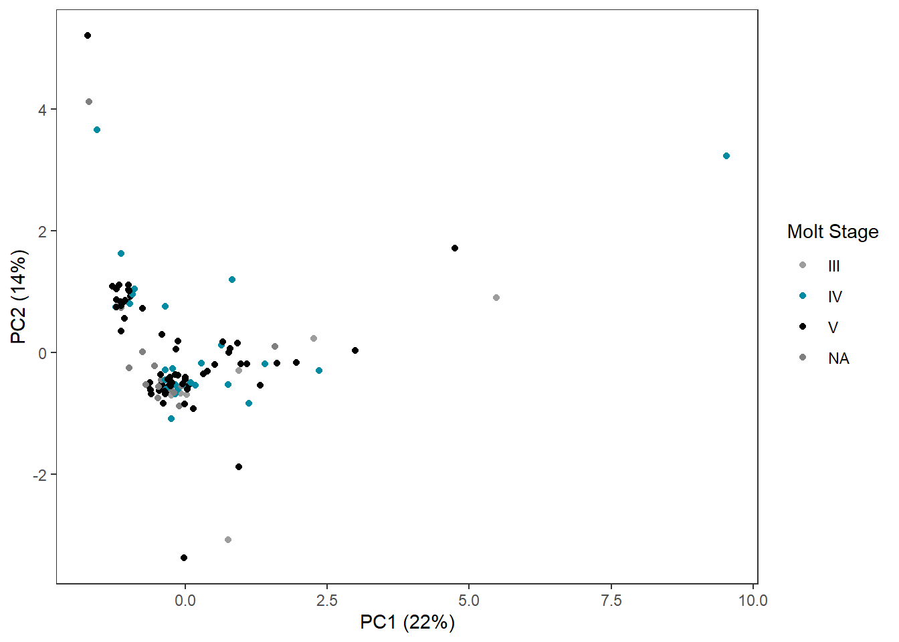
##
## IAV- IAV+
## 2014 5 0
## 2015 5 2
## 2016 7 2
## 2017 9 16
## 2018 12 5
## 2019 7 10
## 2020 6 4
## 2023 25 13.4.2.1 What’s up with year?
Similar # detections per sample as in other years (det.samp), and similar total cytokine concentrations per sample as in other years (sum.samp).
yeartab <-
data.frame(table(data$year))
data %>%
select(Sample, 2:10, year) %>%
pivot_longer(!c(Sample, year), names_to="cytokine", values_to="concentration") %>%
filter(!concentration==0) %>%
group_by(year) %>%
summarize(sum = sum(concentration),
mean = mean(concentration),
median = median(concentration),
n.det = n(),
n.cyto = length(unique(cytokine))) %>%
data.frame() %>%
merge(., yeartab, by.x="year", by.y="Var1") %>%
mutate(det.samp = n.det/Freq,
sum.samp = sum/Freq)## year sum mean median n.det n.cyto Freq det.samp sum.samp
## 1 2014 162.98 10.86533 5.45 15 6 5 3.000000 32.59600
## 2 2015 2142.65 97.39318 14.28 22 5 7 3.142857 306.09286
## 3 2016 2933.76 101.16414 10.44 29 7 9 3.222222 325.97333
## 4 2017 759.04 12.86508 4.76 59 7 25 2.360000 30.36160
## 5 2018 543.14 15.08722 6.54 36 7 17 2.117647 31.94941
## 6 2019 540.11 16.36697 2.14 33 4 17 1.941176 31.77118
## 7 2020 733.68 31.89913 4.86 23 6 10 2.300000 73.36800
## 8 2023 1913.16 18.04868 3.02 106 8 26 4.076923 73.583083.4.3 Analysis Year
Year that samples were analyzed, “batches”
analysisyear_plot <-
ggplot(pca_df,
aes(x=x,
y=y,
col=analysis.year)) +
geom_point() +
stat_ellipse() +
scale_color_manual(values=c("black", "slategray3", "grey60"),
name = "Analysis Year") +
labs(x = pca_labelx,
y = pca_labely) +
theme_bw() +
theme(panel.grid = element_blank(),
legend.position = "bottom")
analysisyear_plot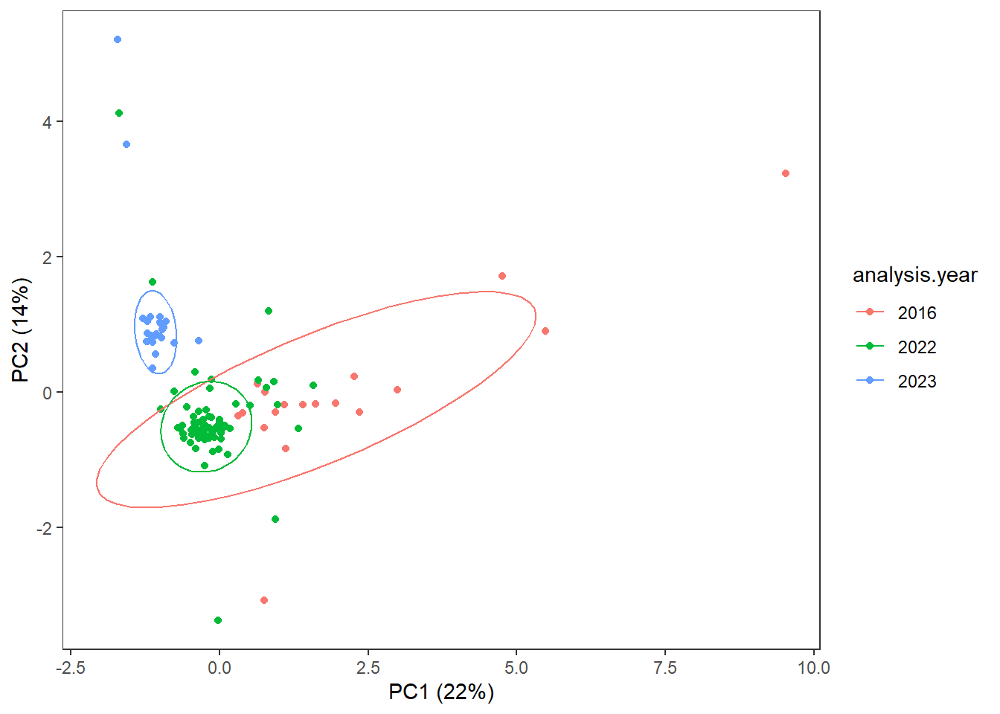
ggsave(filename="Figures/analysisyear_pca.jpeg", analysisyear_plot,
height=6, width=6, units="in")
biplot(pca)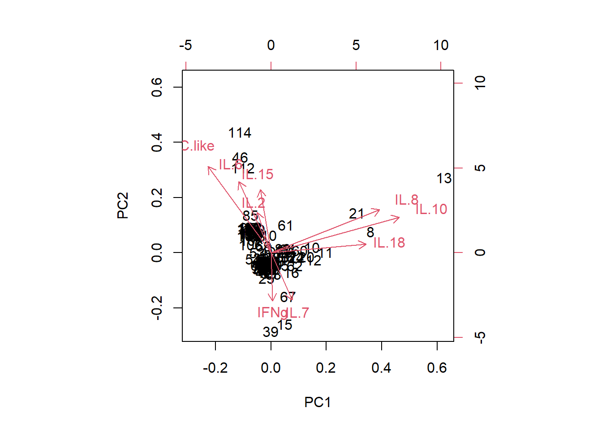
3.4.3.1 What’s up with analysis year?
Similar # detections per sample as in other years (det.samp), and similar total cytokine concentrations per sample as in other years (sum.samp).
analysisyeartab <-
data.frame(table(data$analysis.year))
batchsummary <-
data %>%
select(Sample, 2:14, analysis.year) %>%
pivot_longer(!c(Sample, analysis.year), names_to="cytokine", values_to="concentration") %>%
filter(!concentration==0) %>%
group_by(analysis.year, cytokine) %>%
summarize(sum = sum(concentration),
mean = mean(concentration),
median = median(concentration),
n.det = n(),
n.cyto = length(unique(cytokine)),
max = max(concentration)) %>%
data.frame() %>%
merge(., analysisyeartab, by.x="analysis.year", by.y="Var1") %>%
mutate(det.samp = n.det/Freq,
sum.samp = sum/Freq)## `summarise()` has grouped output by 'analysis.year'. You can
## override using the `.groups` argument.# Mean cytokine concentration
ggplot(batchsummary, aes(x=cytokine, y=mean, fill=analysis.year)) +
geom_col(position="dodge") +
labs(y = "Mean Concentration") +
scale_fill_manual(values=c("slategray", "slategray3", "slategray2"))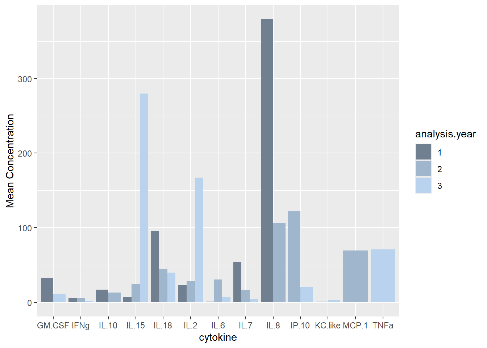
ggplot(batchsummary, aes(x=cytokine, y=log(mean), fill=analysis.year)) +
geom_col(position="dodge") +
labs(y = "Log Tranformed Mean Concentration") +
scale_fill_manual(values=c("slategray", "slategray3", "slategray2"))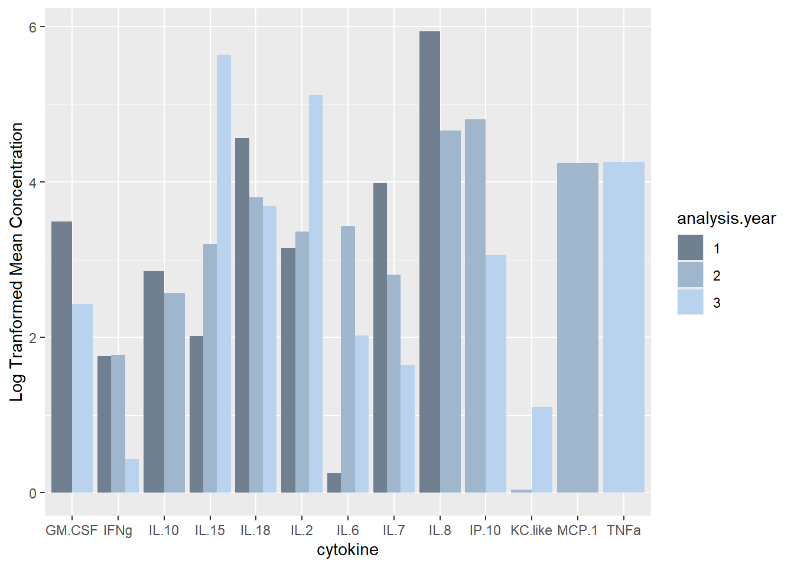
# Median cytokine concentration
ggplot(batchsummary, aes(x=cytokine, y=median, fill=analysis.year)) +
geom_col(position="dodge") +
labs(y = "Median Concentration") +
scale_fill_manual(values=c("slategray", "slategray3", "slategray2"))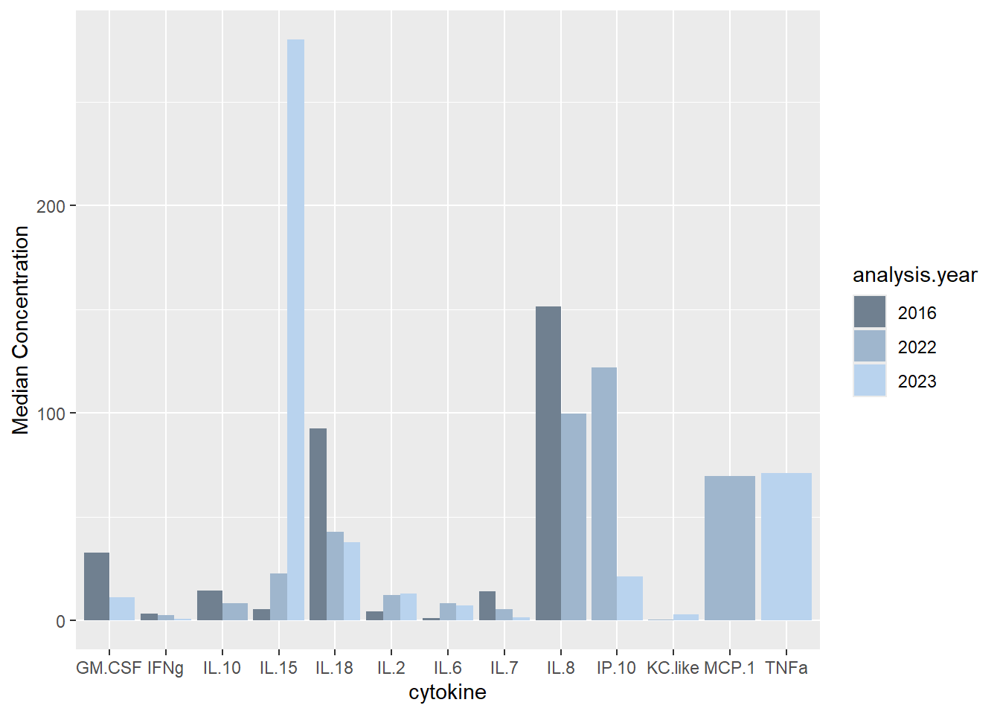
ggplot(batchsummary, aes(x=cytokine, y=log(median), fill=analysis.year)) +
geom_col(position="dodge") +
labs(y = "Log Transformed Median Concentration") +
scale_fill_manual(values=c("slategray", "slategray3", "slategray2"))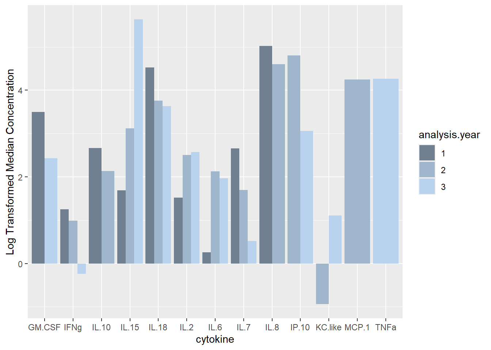
# Sum of cytokine concentrations, sum/sample
ggplot(batchsummary, aes(x=cytokine, y=log(sum), fill=analysis.year)) +
geom_col(position="dodge") +
labs(y = "Log Transformed Sum Concentration") +
scale_fill_manual(values=c("slategray", "slategray3", "slategray2"))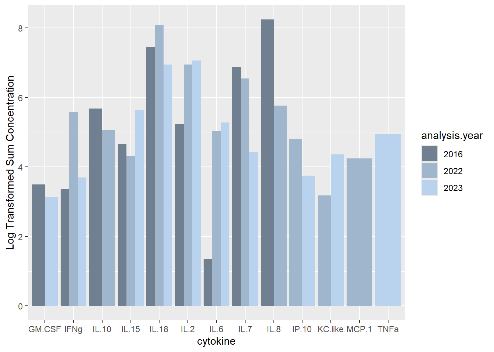
ggplot(batchsummary, aes(x=cytokine, y=log(sum.samp), fill=analysis.year)) +
geom_col(position="dodge") +
labs(y = "Log Transformed (Sum Concentration/Samples Analyzed)") +
scale_fill_manual(values=c("slategray", "slategray3", "slategray2"))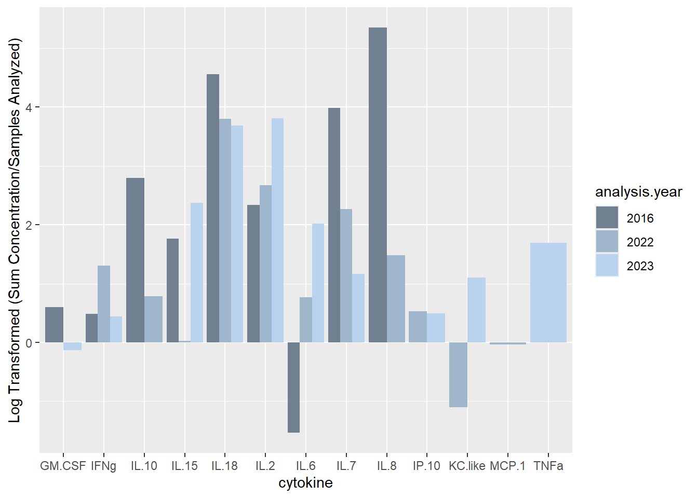
# Detections and proportion of samples with detections
ggplot(batchsummary, aes(x=cytokine, y=n.det, fill=analysis.year)) +
geom_col(position="dodge") +
labs(y = "Number of detections") +
scale_fill_manual(values=c("slategray", "slategray3", "slategray2"))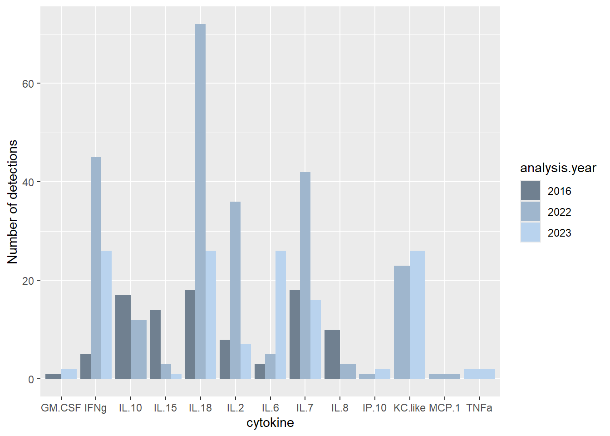
ggplot(batchsummary, aes(x=cytokine, y=det.samp, fill=analysis.year)) +
geom_col(position="dodge") +
labs(y = "Number of detections per Sample") +
scale_fill_manual(values=c("slategray", "slategray3", "slategray2"))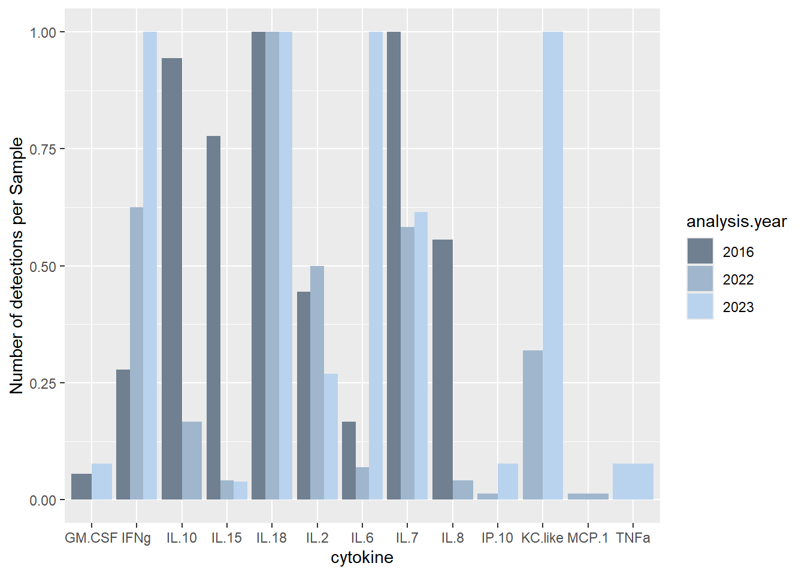
# Max detection of each cytokine
ggplot(batchsummary, aes(x=cytokine, y=max, fill=analysis.year)) +
geom_col(position="dodge") +
labs(y = "Max Detection") +
scale_fill_manual(values=c("slategray", "slategray3", "slategray2"))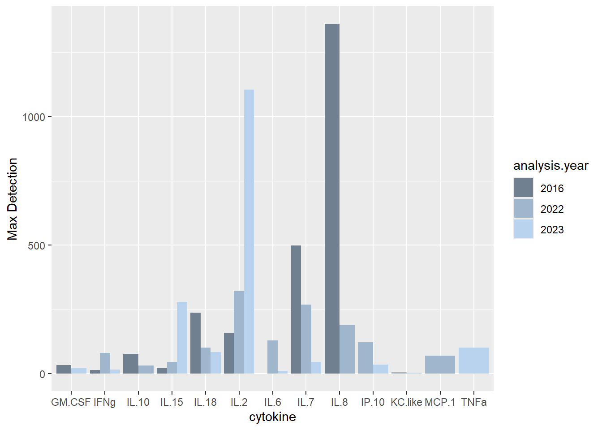
ggplot(batchsummary, aes(x=cytokine, y=log(max), fill=analysis.year)) +
geom_col(position="dodge") +
labs(y = "Log Transformed Max Detection") +
scale_fill_manual(values=c("slategray", "slategray3", "slategray2"))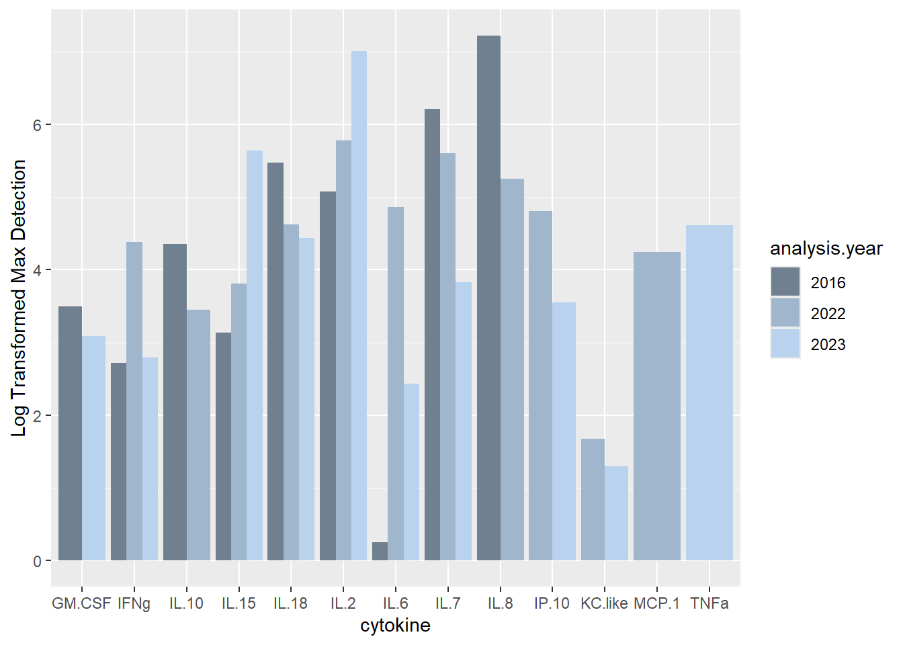
3.4.4 Batch
Batches that samples were analyzed in
ggplot(pca_df,
aes(x=x,
y=y,
col=batch)) +
geom_point() +
stat_ellipse() +
labs(x=pca_labelx,
y = pca_labely) +
theme_bw() +
theme(panel.grid=element_blank())
3.4.5 Location
ggplot(pca_df,
aes(x=x,
y=y,
col=location)) +
geom_point() +
stat_ellipse() +
labs(x=pca_labelx,
y = pca_labely) +
theme_bw() +
theme(panel.grid=element_blank())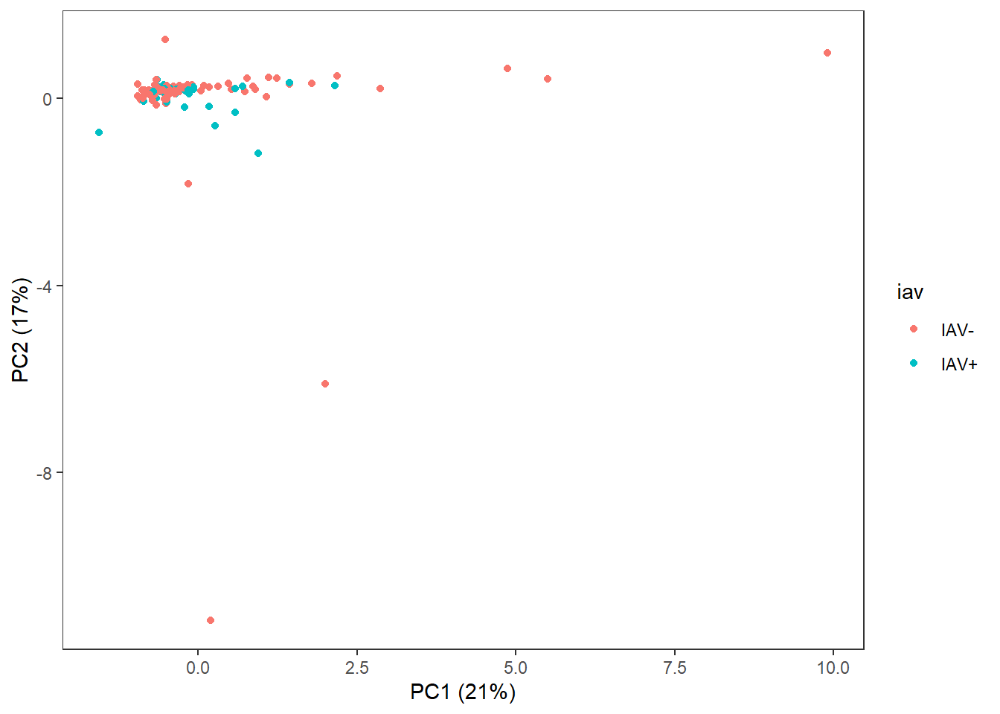
3.4.6 Sex
ggplot(pca_df,
aes(x=x,
y=y,
col=sex)) +
geom_point() +
labs(x=pca_labelx,
y = pca_labely) +
theme_bw() +
theme(panel.grid=element_blank())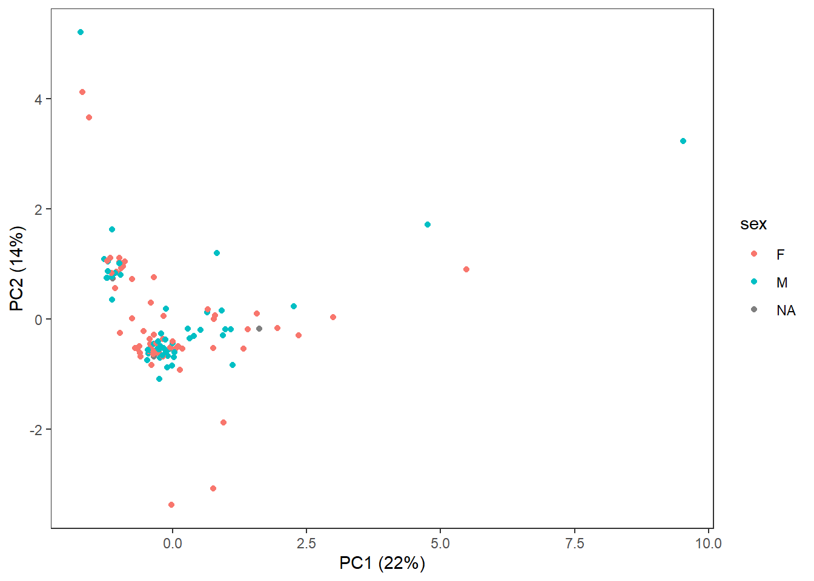
3.4.7 Body Condition
ggplot(pca_df,
aes(x=x,
y=y,
col=bc_bin)) +
geom_point() +
labs(x=pca_labelx,
y = pca_labely) +
theme_bw() +
theme(panel.grid=element_blank())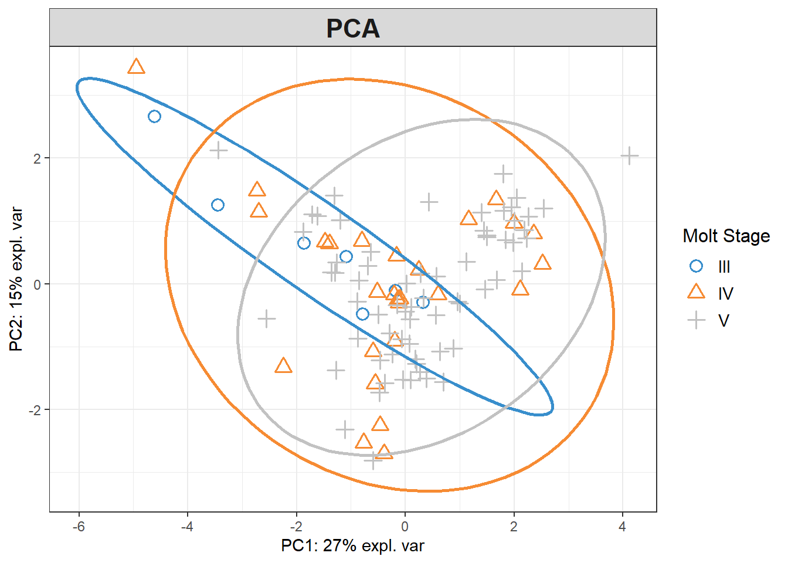
3.5 Is proportion of IAV+/IAV- similar across variables?
3.5.1 Location
tryCatch({
chisq.test(table(data$location, data$iav))
}, warning = function(w) {
fisher.test(table(data$location, data$iav))
})##
## Fisher's Exact Test for Count Data
##
## data: table(data$location, data$iav)
## p-value = 0.6994
## alternative hypothesis: two.sided3.5.2 Molt Stage
tryCatch({
chisq.test(table(data$molt.stage, data$iav))
}, warning = function(w) {
fisher.test(table(data$molt.stage, data$iav))
})##
## Fisher's Exact Test for Count Data
##
## data: table(data$molt.stage, data$iav)
## p-value = 0.04071
## alternative hypothesis: two.sideddata.frame(table(data$iav, data$molt.stage)) %>%
pivot_wider(names_from="Var1", values_from="Freq") %>%
mutate(proppos = (`IAV+`/(`IAV+` + `IAV-`))*100)## # A tibble: 3 × 4
## Var2 `IAV-` `IAV+` proppos
## <fct> <int> <int> <dbl>
## 1 III 3 4 57.1
## 2 IV 15 12 44.4
## 3 V 51 16 23.9## # A tibble: 3 × 6
## group1 group2 n p p.adj p.adj.signif
## * <chr> <chr> <int> <dbl> <dbl> <chr>
## 1 III IV 34 0.681 0.681 ns
## 2 III V 74 0.0803 0.238 ns
## 3 IV V 94 0.0794 0.238 ns3.5.3 Body Condition
tryCatch({
chisq.test(table(data$bc_bin, data$iav))
}, warning = function(w) {
fisher.test(table(data$bc_bin, data$iav))
})##
## Pearson's Chi-squared test
##
## data: table(data$bc_bin, data$iav)
## X-squared = 2.2554, df = 2, p-value = 0.32383.5.4 Analysis Year
tryCatch({
chisq.test(table(data$analysis.year, data$iav))
}, warning = function(w) {
fisher.test(table(data$analysis.year, data$iav))
})##
## Pearson's Chi-squared test
##
## data: table(data$analysis.year, data$iav)
## X-squared = 18.361, df = 2, p-value = 0.000103# Pairwise post-hoc
pairwise_fisher_test(table(data$analysis.year, data$iav), p.adjust.method="holm")## # A tibble: 3 × 6
## group1 group2 n p p.adj p.adj.signif
## * <chr> <chr> <int> <dbl> <dbl> <chr>
## 1 2016 2022 90 0.0621 0.124 ns
## 2 2016 2023 44 0.142 0.142 ns
## 3 2022 2023 98 0.0000268 0.0000804 ****